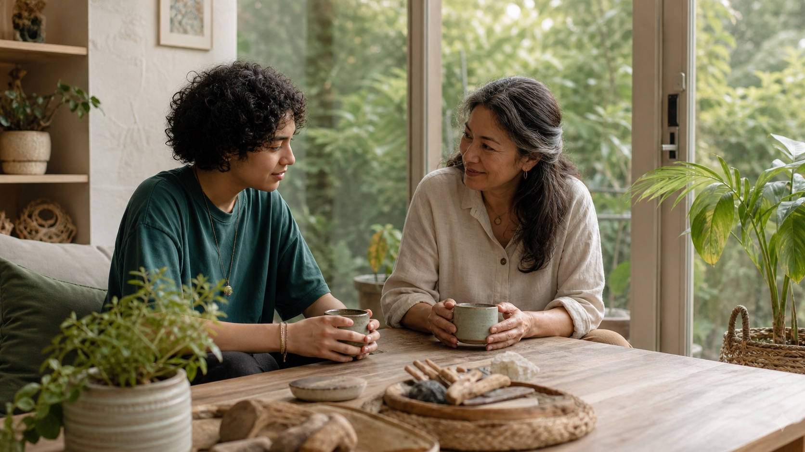

1. Register
Adults may register for themselves. A parent or guardian registers for anyone under 18.
A quiet, scheduled Rainbow Sanctuary wellbeing practice for autistic people and their families. It is designed to be optional, respectful, and accessible—without asking anyone to perform, disclose, or change who they are.
Every Tuesday · 23:00 Beijing (UTC+8)
Register interestSupport access
Adults may register for themselves. A parent or guardian registers for anyone under 18.
We send a simple reminder and preparation note. There is no Zoom session or requirement to attend live at launch.
Contributions help keep access open but are optional and never affect participation.